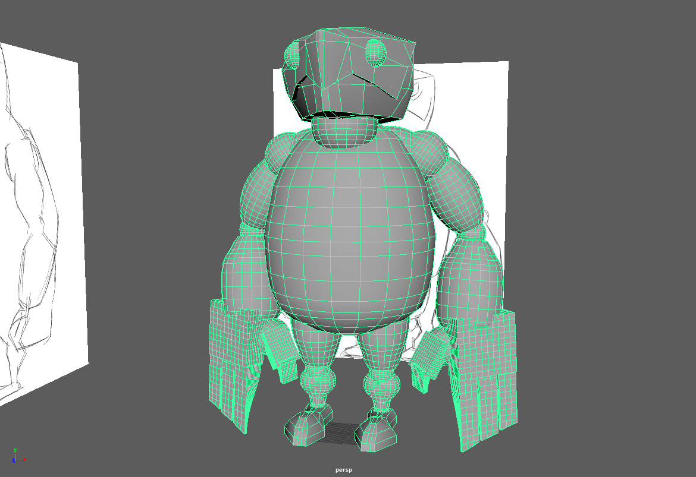
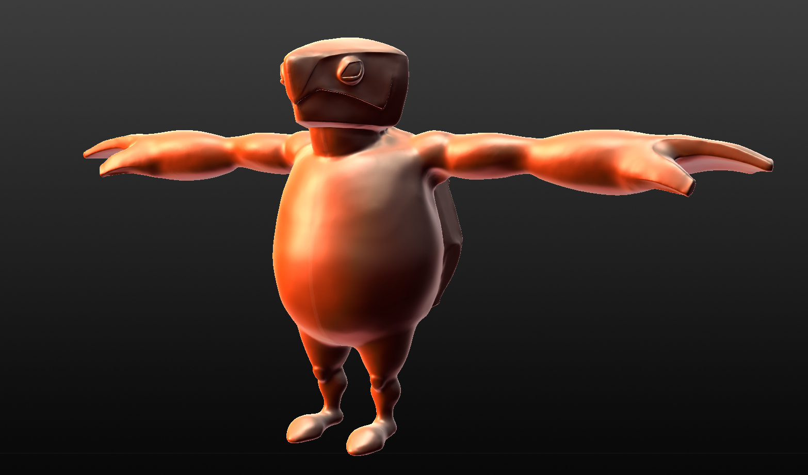
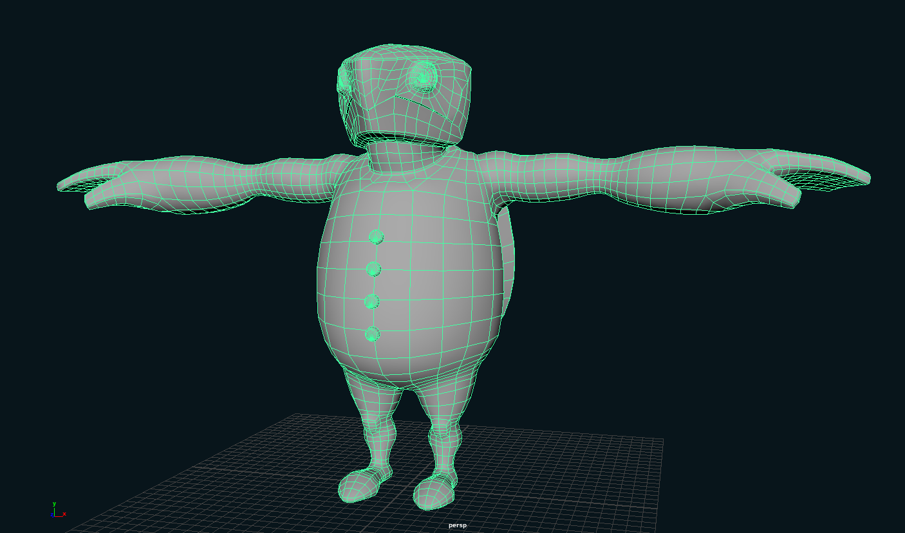

STYLIZED CHARACTER
Abstract
My goal with this project was to design and create
a stylized humanoid but not human character.
I was aiming for a distinct face that conveys some emotion even
in a neutral state, which is why I based the character on a sea turtle.
The character is viewable in an interactive Unity application, and sports
a short idle animation.
Details
| Production | 06/2019 - 09/2019 |
| Time | 3 months (on-and-off) |
| Polycount | approx. 5000 |
| Software |
Pixologic Sculptris Autodesk Maya + aniMeta plug-in Substance Painter Photoshop Unity |
Video
Process
While I experienced a few issues during the designing process, as
soon as my final concept was all set I was able to execute the modeling, texturing and
animation tasks without major hiccups.
Using my 2D sketches as modeling reference I roughly replicated my design with the use
of primitives in order to refine the details through sculpting.
My initial retopologized base mesh entailed about 6000 faces, which were
brought down to 4000 after realizing that I didn't need that high a degree
of fidelity for this type of character.



My Learnings
- Basic sculpting off of 2D references
- Mesh Retopology
- Character Rigging
- Character Animation
- Engine implementation of animated characters
Credits
Special Thanks to my coach
Prof. Jan Berger